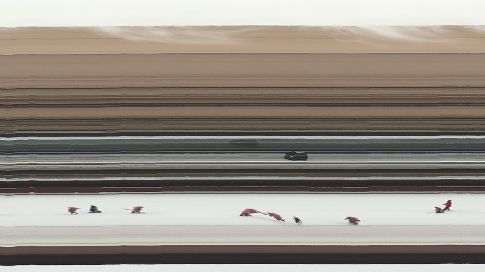
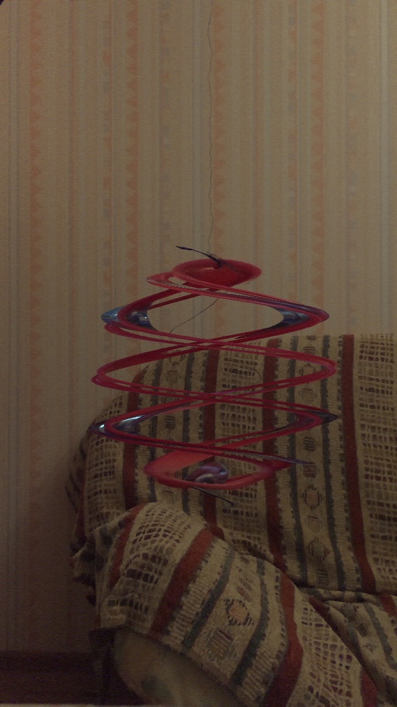

Do you want to make time-distorted photos like this?
You don't need to buy special equipment to make slit-scan photos! All you need is the Slit-Scan Maker app for iOS!
Taking slit-scan pictures has never been easier!
Man Leaving the Room (the Moving Slit Mode)
Two Spoons Rotating on a Thread (the Still Slit Mode)
Some Smoke, a Car and Children Playing (the Still Slit Mode)
Cars Hiss by My Window (the Still Slit Mode)
A Tambourine on a Thread (the Moving Slit Mode)